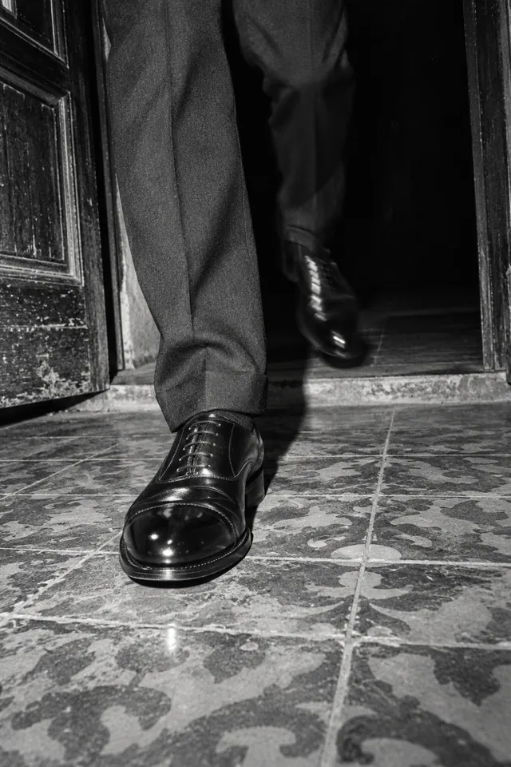
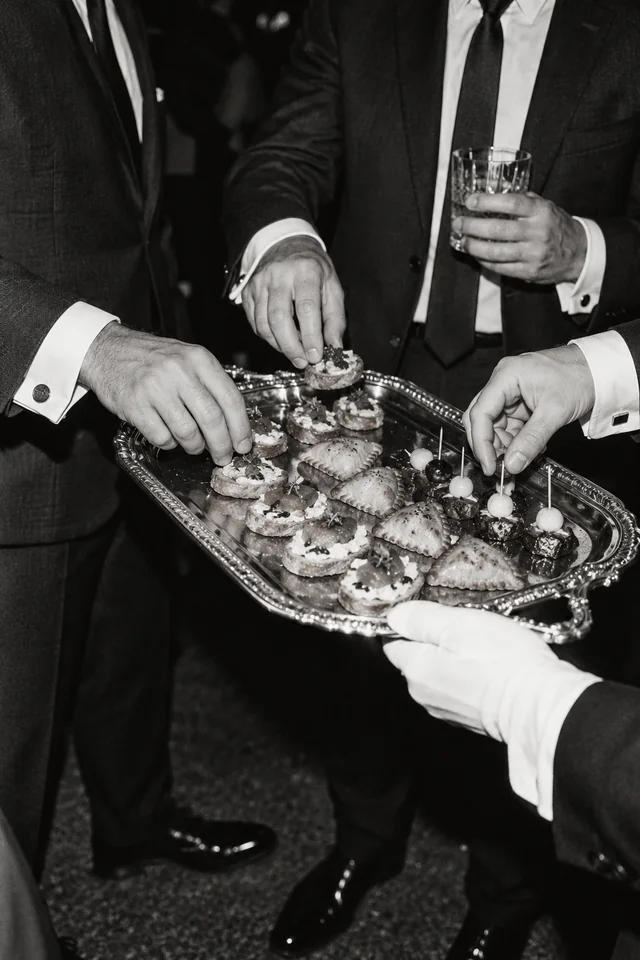
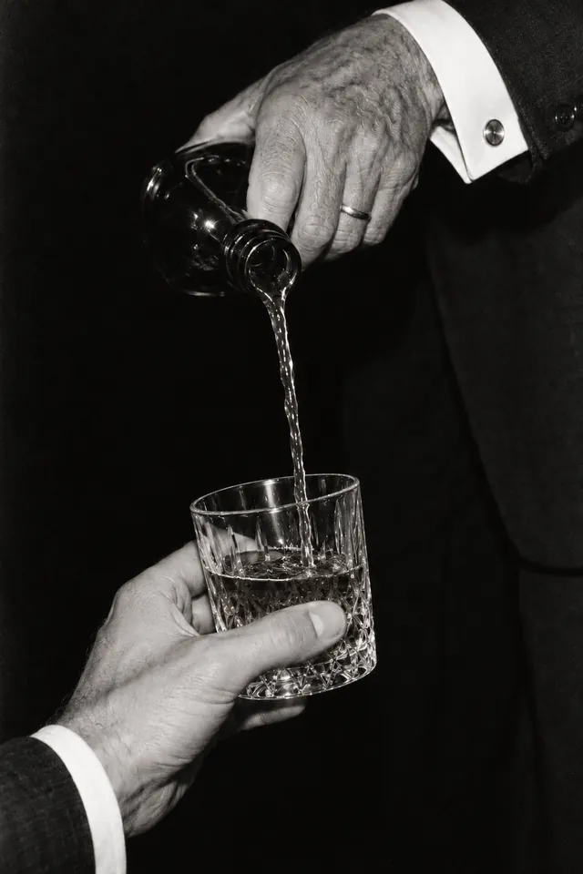
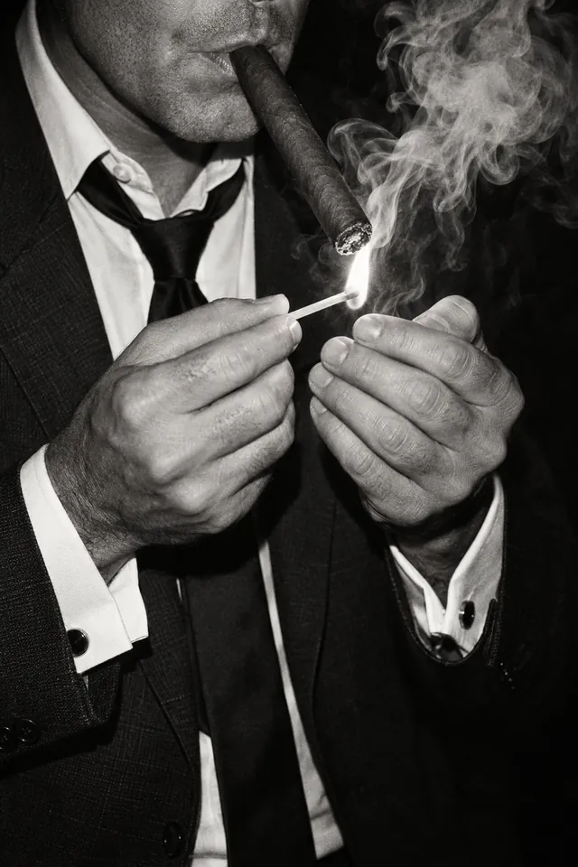
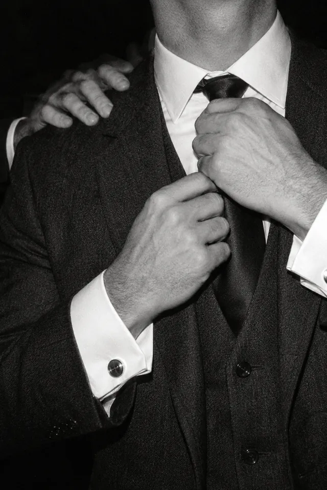
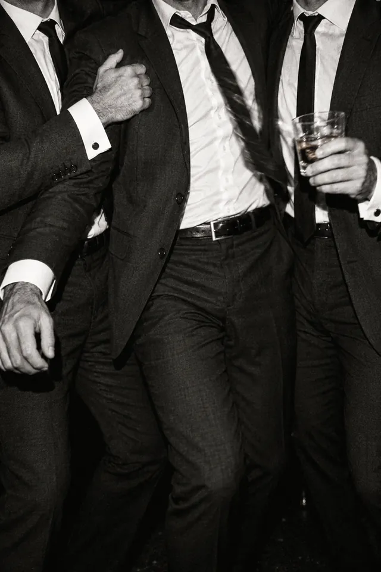
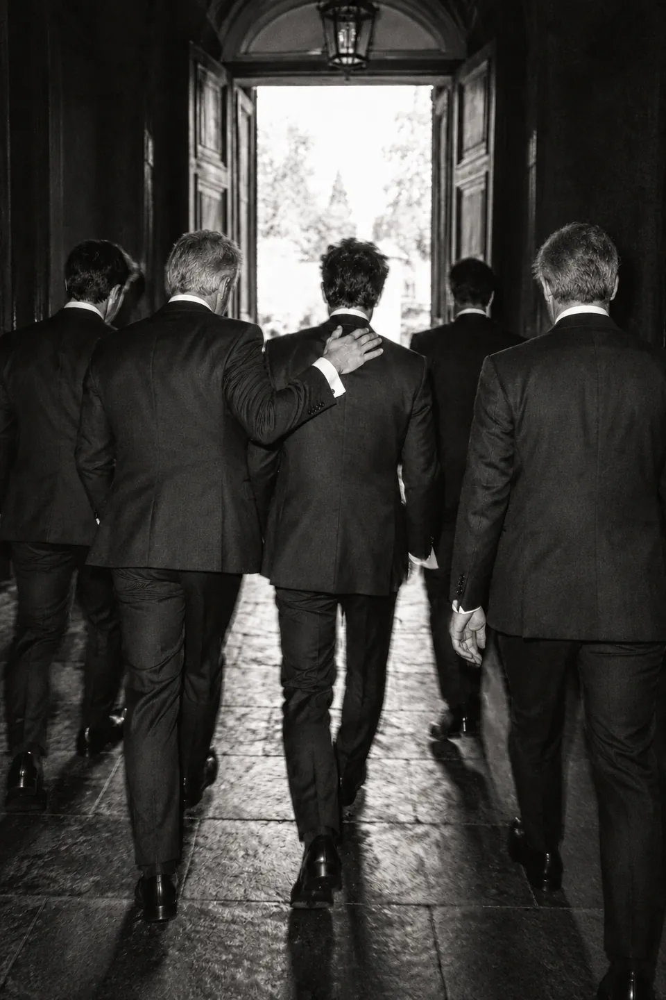

Hoja de contactosRollo Nº 24
La previade Dani
Sábado24 de octubre Desde las 13:00 · Casa Puente
Muchachos,
Antes de dar el sí quiero pasar las últimas horas de soltero con ustedes. Almorzamos, brindamos con el Glenfiddich 15 que eligió papá, prendemos unos habanos, nos ponemos el traje y de ahí vamos juntos al civil.
Dani
El plan, cuadro por cuadro
Tocá un cuadro para verlo con la lupa
-

Cuadro 1Llegamos
Desde las 13:00, en Casa Puente.
-

Cuadro 2Almorzamos
Sin apuro, entre nosotros.
-

Cuadro 3Brindamos
Con el Glenfiddich 15 que eligió papá.
-

Cuadro 4Habanos
Prendemos unos habanos, como corresponde.
-

Cuadro 5El traje
Nudo, gemelos y una mano en el hombro.
-

Cuadro 6Fotos
Las de este rollo, así que vengan peinados.
Orden de revelado
- Para
- Los muchachos
- Qué
- La previa del novio, antes del civil
- Cuándo
- Sábado 24 de octubre de 2026Desde las 13:00
- Dónde
- Casa PuenteAv. Paseo de Fátima 464, Mariano Roque Alonso. Es en el mismo lugar del casamiento.
- Proceso
- Blanco y negro, con flash
Faltan
00días
00horas
00min
00seg

Y de ahí, todos juntos al civil.